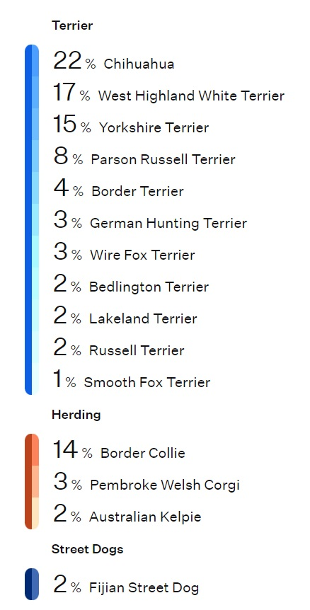

I spent the majority (15 years!) of my professional career in Residential Conveyancing.
In this fast-paced environment, I was able to gain expertise in many core skills such as problem solving,
coaching & training others, effective time management, managing stakeholders and their expectations, attention to detail and how to
thrive in a high-pressure setting. While this was a fantastic place to hone many great skills that can translate well in any career,
I was left wanting to do something more aligned with my interests.
I've now decided to switch to a career i'm more passionate about - web & software development! Over the past few months,
I have gained a strong core knowledge of HTML, CSS & JavaScript and also dabbling in a little Node.js & C#. Future learning plans currently include React and RESTful API's.
I'm looking forward to starting my professional career in the wonderful world of tech!
This is my dog Tilly, she's a 6-year-old mixed breed and is very loud for such a small dog.
Apart from enjoying the Welsh countryside on a dog walk, I also enjoy spending my free time playing colony sim / management games
such as Factorio and Oxygen Not Included
